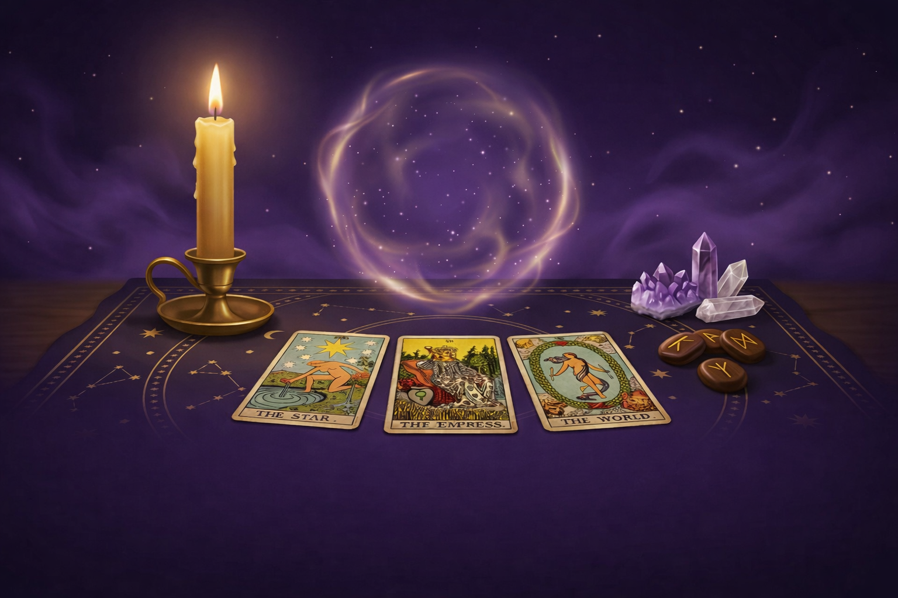

Место магии, силы и внутренней опоры
Написать Ирине в Telegram
Ирина — практик с многолетним опытом. Более 15 лет работы с Таро, оракулами, рунами и другими мантическими системами. Более 10 лет опыта в ритуалистике и энергетической работе. Помогает в вопросах любви, финансов, отношений, удачи и самопознания.
Чёткие ответы на вопросы, помощь в принятии решений и поиске внутренней опоры. Расклады на любовь, отношения, финансы и будущее.
Получение точных посланий из тонкого мира, направленных именно вам. Подходит для сложных жизненных ситуаций.
Эффективные ритуалы для решения задач, привлечения удачи, гармонизации энергии и защиты.
Скандинавская мудрость для ясности, защиты и энергетического равновесия. Диагностика и рекомендации.